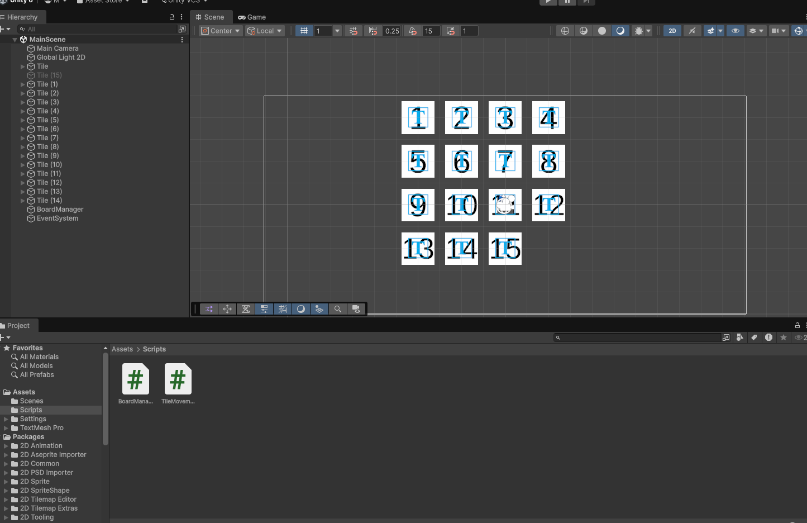

Projetos



Olá, eu sou
Apaixonado por tecnologia, lógica e resolução de problemas. Busco criar soluções eficientes e impactantes através do código.
Ver ProjetosAlém de ser estudante de Engenharia, também sou jogador de vôlei. Já disputei diversos campeonatos, dentre eles dois Campeonatos Brasileiros.
Coloco dedicação e esforço em todos os projetos que faço, sempre buscando ser melhor do que ontem.
Tenho em mente que trabalhar em equipe é essencial para o crescimento profissional e pessoal.
Também possuo bom senso de liderança, sabendo conduzir equipes com responsabilidade, organização e foco sempre em busca de resultados.
